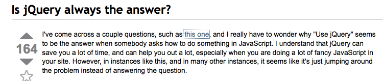
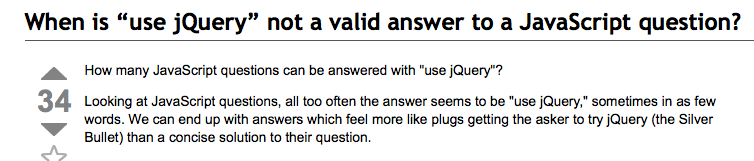
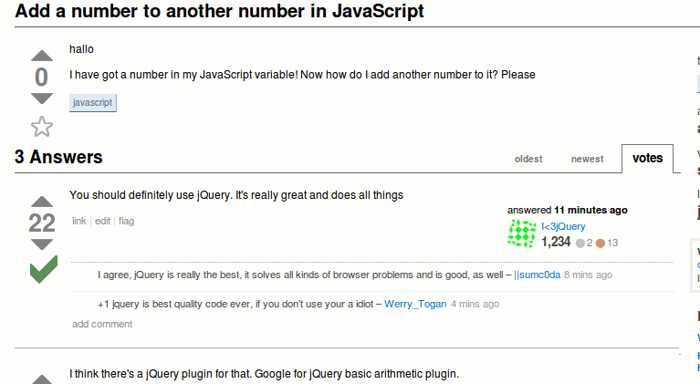

| z, ? | toggle help (this) |
| space, → | next slide |
| shift-space, ← | previous slide |
| d | toggle debug mode |
| ## <ret> | go to slide # |
| c, t | table of contents (vi) |
| f | toggle footer |
| r | reload slides |
| n | toggle notes |
| p | run preshow |
Jason Gritman
Consultant @ Chariot Solutions
jasongritman@gmail.com
@jgritman
https://github.com/jgritman
<g:javascript library="prototype" />
<g:javascript library="jquery" />


$('#myDiv') // id selector
$('.myClass') // class selctor
$('div') // type selector
$(':input') // special selectors
$('#main > div') // child selctor
$('#main form') // descendant selector
$('myDiv').addClass('myClass')
$('myDiv').removeClass('myClass')
$('myDiv').show()
$('myDiv').hide()
$(':button').click(function() {
this.attr('disabled', 'disabled');
}); $.get('test.html', function(data) {
$('.result').html(data.title);
});
// result of request will replace
// content of element with id result
$('#result').load('test')